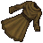
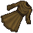

crocodile
daemon
dragon
earth elemental
ettin
gargoyle
gorilla
lich
lizardman
ogre

orc
ratman
skeleton
| アカウント期間 | 受け取り最大数 |
| 12〜23ヶ月 | 3 |
| 24〜35ヶ月 | 4 |
| 36〜47ヶ月 | 5 |
| 48〜59ヶ月 | 6 |
| 60〜71ヶ月 | 7 |
| 72〜83ヶ月 | 9 |
| 84〜95ヶ月 | 11 |
| 96〜107ヶ月 | 13 |
| 108〜119ヶ月 | 15 |
| 120〜131ヶ月 | 17 |
| 132〜143ヶ月 | 19 |
| +1年ごと | +2 |
| statuette | 期間 |
crocodile |
1年 |
daemon |
1年 |
dragon |
1年 |
earth elemental |
1年 |
ettin |
1年 |
gargoyle |
1年 |
gorilla |
1年 |
lich |
1年 |
lizardman |
1年 |
ogre |
1年 |
orc |
1年 |
ratman |
1年 |
skeleton |
1年 |
| statuette | 期間 |
troll |
1年 |
cow |
3年 |
zombie |
3年 |
 llama |
3年 |
ophidian |
4年 |
reaper |
4年 |
mongbat |
4年 |
gazer |
5年 |
fire elemental |
5年 |
wolf |
5年 |
harrower |
10年 |
efreet |
10年 |
| Terathan Matriarch | 11年 |
| Navrey Night-Eyes | 11年 |
| Fire Ant | 12年 |
| Exodus | 13年 |
| cloak/robe/dress | 期間 |
   bronze |
1年 |
copper |
1年 |
agapite |
2年 |
golden |
2年 |
verite |
3年 |
valorite |
3年 |
dark gray |
4年 |
ice green |
4年 |
ice blue |
4年 |
| cloak/robe/dress | 期間 |
 jet black |
5年 |
ice white |
5年 |
fire |
5年 |
pink |
10年 |
crimson |
10年 |
| forest green | 11年 |
| royal blue | 12年 |
| 乗り物 | 期間 |
ethereal horse |
3年 |
ethereal ostard |
3年 |
 ethereal llama |
3年 |
ethereal kirin |
4年 |
ethereal unicorn |
4年 |
 ethereal ridgeback |
4年 |
| 乗り物 | 期間 |
ethereal swamp dragon |
5年 |
ethereal beetle |
5年 |
ridable polar bear |
9年 |
ethereal cu sidhe |
10年 |
| Reptalon | 11年 |
| Hiryu | 12年 |
| Boura | 13年 |
| 染桶 | 期間 |
Black dye tub |
1年 |
 Furniture dye tab |
1年 |
Special dye tab |
1年 |
Leather dye tab |
2年 |
Runebook dye tab |
4年 |
Reward Statue dye tab |
5年 |
金属染め桶 |
5年 |
光沢色革染め桶 |
5年 |
| アイテム | 期間 | 特徴など |
| Mini Contest 2004 Winning House | 1年 | 地面に設置される。障害物とはならない。 |
| Mini Contest Winning House | 1年 | 地面に設置される。障害物とはならない。 |
| Banner Deed | 2年 | 32種類より選択。壁に設置される。ダブルクリックで取り外し可。 |
| Flaming Head Deed | 2年 | 南向きの壁に設置される。ダブルクリックで取り外し可 |
| Minotaur Statue Deed | 2年 | 4種類より選択。斧を使って取り外す。 |
| Potted Cactus Deed | 3年 |
6種類よりランダム。Publish56より選択制へ修正予定 |
| Decorative Shield Deed | 4年 | 16種類より選択。壁に設置される。ダブルクリックで取り外し可。 |
| Hanging Skeleton Deed | 4年 | 5種類より選択。壁に設置される。ダブルクリックで取り外し可。 |
| Ankh Deed | 5年 |
2種類より選択。ダブルクリックで取り外し可。 |
| Bloody Pentagram Deed | 5年 |
6マス×6マスを占める。Arcane focusを作成可能。斧を使って取り外す。 |
| Jade Character Statue Maker | 6年 | →
設置位置を決めたあと、ポーズ（6種）、向き（8種）、色の濃さ（4種類）を選択する。
|
| Marble Character Statue Maker | 6年 |
Jade Character Statue Makerと使用方法は同じ |
| Bronze Character Statue Maker | 6年 |
Jade Character Statue Makerと使用方法は同じ |
| Brazier Deed | 6年 |
2種類よりランダム。料理用の熱源となる。Publish56より選択制へ修正予定 |
| Decorative Cannon Deed | 7年 |
4種類より選択。初期10チャージを使い果たしたあとは、explosion potionに満たされたpotion kegを使い、チャージを回復させる。
|
| Tree Stump Deed | 7年 |
4種類より選択。1日1回（最大10日分）ランダムなlog×10を入手可能。 |
| Sheep像 | 7年 | |
| デイビーズのロッカー | 8年 | トレジャーマップおよびSOSを最大500枚収納できる |
| Wall Banner Deed | 9年 | 30種類より選択。壁に設置される。斧を使って取り外す。 |
| Mining Cart Decoration Deed | 10年 |
4種類より選択。1日1回（最大10日分）ランダムな大ore×10またはnormal gem×5を入手可能。 |
| Deed for An Ankh of Sacrifice | 10年 |
2種類より選択。カルマロック、蘇生（再使用に1時間）が可能。斧を使って取り外す。 |
| スカルラグ | 10年 | 1週間毎にトレジャーマップを1枚生み出す。 |
| ローズラグ | 10年 | 1週間毎にガーデニング用の種を1つ生み出す。 |
| イルカのラグ | 10年 | 1週間毎にSOSのボトルを1本生み出す。 |
| カオス／オーダーの紋章旗 | 12年 | |
| 転送の盾 | 14年 |
| アイテム | 期間 | 特徴など |
Red Soulstone |
1年 | スキルを石の中に収めることが可能となる。使用者のアカウント内のキャラクターで共有。 |
 Commodity deed Box |
1年 | 銀行内と同じように、この箱の中でcommodity deedを使用可能（Deed化←→資材化）。 |
Weapon engraving tool |
8年 | 武器に刻印を施すことができる。初期10チャージを使用したあとは、細工スキル＋Blue diamondまたはNPC細工屋＋10万gp＋Blue Diamondが必要。 |
| クリスタルの転送台 | 1年 | |
| 背徳のクリスタル転送台 | 1年 | |
| グレートバインド ブレスレット |
1年 | |
| シードボックス | 4年 | |
| デイビーズのロッカー | 8年 | |
| レタッチツール | 11年 | |
| ハウス間テレポーター | 12年 | |
| 物置き小屋の証書 | 15年 |